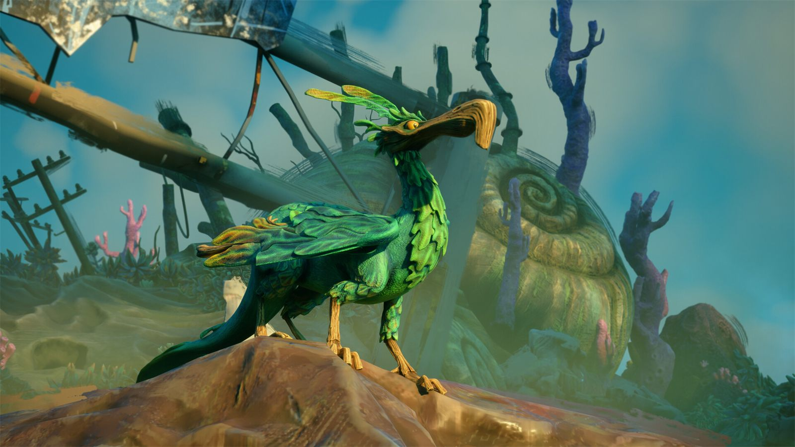

Primer juego del año. Se trata de una aventura cortita de Double Fine Productions, el estudio perteneciente a Xbox Game Studios que también se encargó de Psychonauts 2. Me llamó la atención desde el primer momento que lo vi, en junio del año pasado, en el Xbox Games Showcase. En aquel tráiler de presentación se veía cómo controlabas a un faro con patas por un mundo de lo más surrealista mientras un dodo volador te acompañaba, y dije de una. Encima está en Game Pass, el servicio de suscripción de Microsoft, así que no había excusa.
Es una aventura lineal con una duración aproximada de entre cuatro y cinco horas. El apartado que más sobresale, en mi humilde opinión, es el artístico. Los de Double Fine son expertos en crear mundos enigmáticos, raros y a la vez interesantes de explorar. El juego está estructurado en secciones muy cortas, pero donde estás constantemente aventurándote en una zona radicalmente distinta a la anterior. También aprovechan esto para introducirte mecánicas nuevas y que hagas a nivel jugable algo ligeramente distinto.
Una historia abstracta y un puñado de sorpresas
Keeper tiene una historia, pero es bastante abstracta y queda sujeta a la libre interpretación. A mí personalmente me ha parecido irrelevante y para mañana ya la habré olvidado. Creo que la experiencia está en la contemplación del entorno y de los escenarios conforme avanzas. De todos modos, lo que más me ha sorprendido es que el juego es más de lo que aparenta y guarda varias sorpresas para el jugador. Sin dar muchos detalles, te van a cambiar la experiencia jugable de vez en cuando a lo largo de la historia. Me ha gustado porque no me lo esperaba y creo que está bien traído, ya que aporta bastante variedad.

Puzles elementales y poco desafío
Ahora bien, no esperéis la gran cosa a nivel jugable. Los puzles son muy básicos y fáciles de resolver. El juego es de tirar para adelante y no mirar atrás. El cenit de la jugabilidad está probablemente en una zona de unos quince minutos donde haces algo de plataformeo, y en la última sección del juego, pero hasta ahí. Quizás sí que es notable a la hora de introducirte elementos nuevos sobre los que interactuar, aunque son muy elementales. Hay numerosas secciones en las que simplemente debes concentrar la luz del faro para poder avanzar.
En conclusión, es una aventura psicodélica y cinematográfica de lo más curiosa. Al terminar comentaba que no creo que merezca la pena pagar más de 10-15 € por él, teniendo en cuenta que ahora mismo vale 30 €. Es uno de esos juegos que te pones si quieres relajarte, no pensar mucho y quedarte con la boca abierta ante el mundo tan bizarro en el que te estás adentrando. Keeper no va a trascender, eso seguro, pero es que tampoco creo que pretenda hacerlo. Me quedo con lo bonita que ha sido esta travesía tan singular.
Lo mejor
- La dirección artística construye un mundo enigmático y muy reconocible.
- Cambia la experiencia jugable varias veces y consigue sorprender.
- Cada capítulo te lleva a una zona radicalmente distinta a la anterior.
Lo peor
- Los puzles son muy básicos y se resuelven casi sin pensar.
- La historia es tan abstracta que acaba resultando irrelevante.
- El precio de salida queda alto para lo que ofrece.
Desglose de puntuación
Veredicto
Una aventura psicodélica y cinematográfica de apenas cinco horas, sostenida casi por completo por su dirección artística. No trasciende, pero tampoco lo pretende.